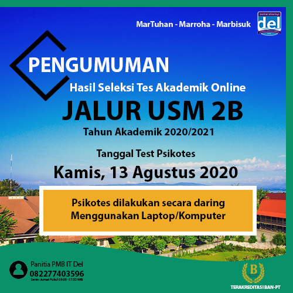
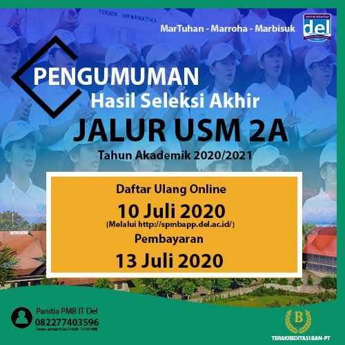
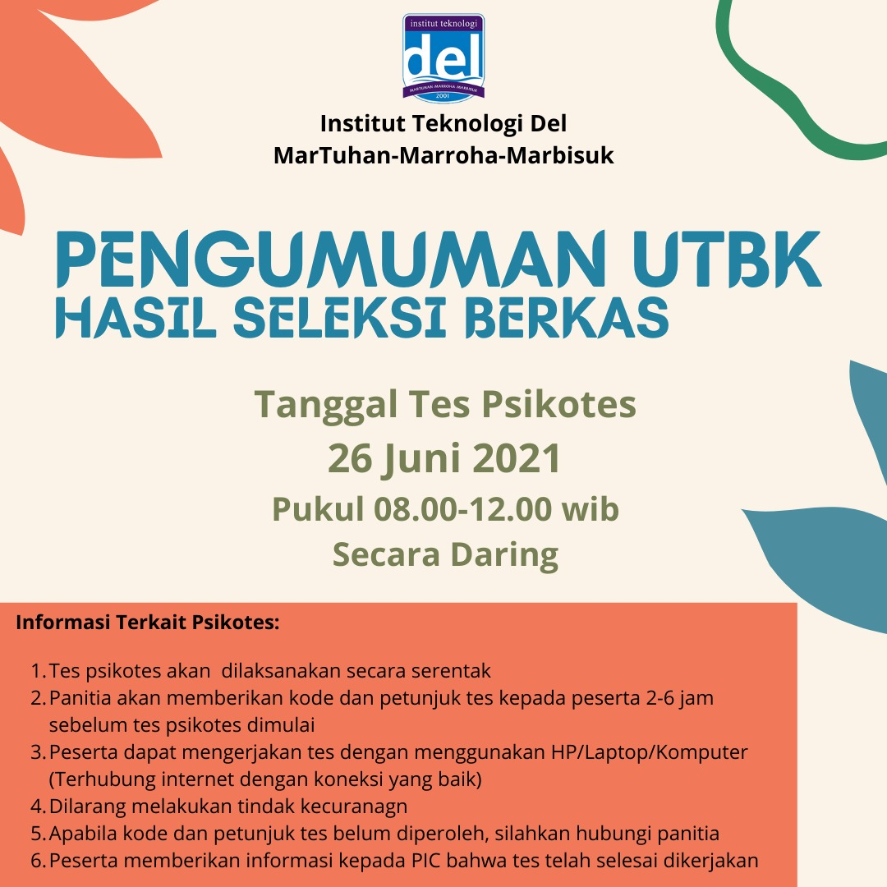

Pada Hari Sabtu 23 September 2023, Institut Teknologi Del melaksanakan Wisuda untuk 398 Mahasiswa Sarjana dan Diploma. Turut hadir Bapak Dr. Honoris Causa Ir. Airlangga Hartarto, MBA, MMT (Menteri Koordinator Bidang Perekonomian Republik Indonesia), Bapak Rionald Silaban (Direktorat Jendral Kekayaan Negara), Bapak Jend. TNI (Purn.) Luhut Binsar Pandjaitan, M.P.A (Ketua Pembina Yayasan Del), Ibu Intan Simanjuntak (Ketua Pengurus Yayasan Del), dan tamu undangan lainnya. Kegiatan Wisuda ini dilaksanakan di Gedung Serba Guna Yayasan Del dengan tema “Fostering..
Pengumuman Terbaru


Pengumuman Rektor Terpilih Institut Teknologi Del
Periode 2021-2025
06 minute read
3.5k Views

Pengumuman Hasil Seleksi Tes Akademik Online Jalur
USM 2B
06 minute read
3.5k Views

Pengumuman Hasil Akhir USM 2A T.A 2020/2021
06 minute read
3.5k Views


PENGUMUMAN HASIL SELEKSI NILAI UJIAN TULIS BERBASIS
KOMPUTER (UTBK) T.A 2021/2022
06 minute read
3.5k Views